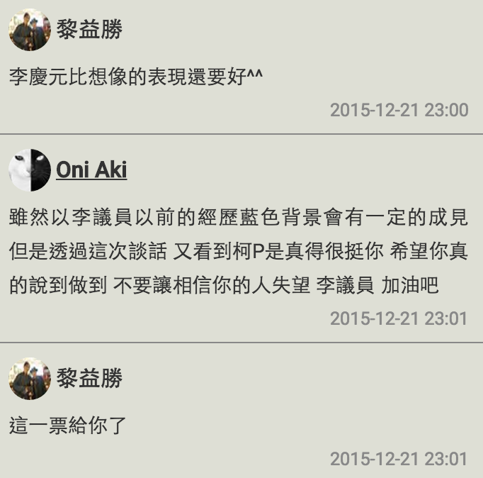

柯文哲夜問系列座談進行到第三場，台北市長柯文哲今天對上（？）的是陸續加入過新黨及國民黨，被國民黨開除之後，目前以無黨籍身分參選的李慶元議員。「深綠」、救扁的柯文哲和「深藍」、反扁的李慶元，如今同樣以無黨籍的身分對談，讓這場座談會備受矚目。許多網友也準備了尖銳的提問，躍躍欲試要打臉李慶元。結果這場座談會有沒有讓大家滿意呢？請看我們的文字快報！
先惡補一下座談前的尖銳專訪：柯文哲夜問新國會系列專訪》無黨籍立委參選人李慶元—中央欠地方的東西，我到國會之後要幫忙討回來
脫掉繡著國民黨黨徽的背心，李慶元身穿白色的背心，上面繡了大大的「新頭腦」，顯然想要扭轉大家對他的既有印象。但出來跑總是要還，主持人開場就請李慶元交待一下自己的從政經歷。
回想自己由媒轉政後的 19 年，李慶元不禁慨歎「很滄桑」。李認為自己一直在尋找改革，所以加入了當時要改革國民黨的新黨。後來新黨走上反改革的道路，李看到馬英九高喊黨產歸零的改革派形象，才又加入了國民黨。可是歷經了六七年、兩位主席，國民黨黨產至今屹立不搖，連黨營事業都沒有結束，李慶元心中各種失望。
談起被國民黨開除的事，李慶元表示自己其實六月份已經提出退黨，不知道為何還是被大動作開除了，或許是因為他追打美河市、大巨蛋、交九轉運站、文湖線廢土案等等疑案，黨內早有人想拿他開刀。「柯市長這五大弊案，我已經打了七、八年了」，李慶元淡淡的說，柯文哲在旁一驚，臉上的笑容那叫一個意味深長。
兩個人推敲了半天，還是摸不清國民黨開除李的真正原因。只有疑案越打越清楚，一個個最後證明都是鐵板釘釘的弊案。相差一歲的這對政壇菜鳥及老將（李慶元大柯文哲一歲），一個搖頭、一個攤手，各種無可奈何。
但做個改革派到底是什麼意思呢？李慶元認為在黑金政治的大環境下，揭弊是民意代表當然的職責。但他話鋒一轉，告訴柯文哲，選民服務倒也未必是關說，有時候就是人民有委屈。柯文哲則認為，民代會要花那麼多時間來安人民的心，代表人民不信任系統，這才是問題。
李慶元也坦承，退出國民黨之後，曾經想過要離開政壇。改革的曙光遲遲不現，小小的市議員在國民黨內又無足輕重，難免灰心。倒是國民黨大動作開除黨籍，才讓他覺得不可理喻，「自己又沒有作奸犯科，怎麼會因為講真話被開除？」柯文哲在一旁樂不可支，直呼太扯了、太扯了。
柯文哲談起自己送給李慶元的「勇者無懼」牌匾，忍不住感嘆這肯定是個有問題的時代，才會讓一個人光是講真話就可以成為英雄，明明做對的事是很自然的事，卻變成一件好像需要勇氣的事，「太好笑了。」
李慶元接過話頭，認為民意代表倒不能真的無所畏懼，對權貴、特權固然需要無懼的勇氣，但政治人物應該要畏懼人民。而正是柯文哲送給他的牌匾，讓他終於下定決心宣布參選。
李慶元語帶無奈地說，變色龍都是趨吉避凶，他進國民黨卻因為不斷揭弊變成孤鳥。連民進黨議員都說他問政的狠勁，比民進黨還民進黨。柯文哲也點頭附和，說當初第一次在議會碰到李慶元質詢，就對他碰到不對的事情就砍的問政風格印象深刻，覺得他「很不國民黨」。
李慶元接著表示，從過去的經驗來看，政治人物退出國民黨之後，政治生命大概就結束了。他當初也沒想到今天蔡英文主席會推動首都改革陣線，如今湧來的各種支持，其實當初都無法預料。就是在柯文哲的啟發之下，決定要用無黨籍的身分，用沒有包袱、沒有顧忌的角色，重新定位自己。
對於李慶元被國民黨開除後以無黨籍參選，柯文哲顯然很能理解孤鳥的辛苦。但是回想起自己當初一介醫者，被國民黨各種追殺，終於決定出來跟國民黨拚了。他說，李慶元也算是被「逼上梁山」，國民黨開除說真話的議員，根本自甘墮落。
凡走過必留下痕跡，網友翻出 2004 年陳水扁當選連任後，李慶元在台北市議會強行拆除陳水扁肖像的影片，要李說清楚講明白。
李慶元坦言，那時候藍營上下群情激憤，他就是想找個出口讓大家的情緒能宣洩一下。但是這樣不尊重國家元首的過激行為，終究是個不良示範，所以他第二天就在新黨主席陪同之下出面道歉。今天被問到，也還是要道歉。談起這件事，柯文哲倒是一派理解的同情，說人就是有情緒，沒辦法。
那麼如今怎麼看待陳水扁呢？李慶元說自己從年初開始，就三度在談話性節目上公開表示，畢竟陳是卸任國家元首，希望馬英九比照各國慣例，特赦陳水扁。其中有一度是與陳水扁公子陳致中同台，致中在節目後也來和他握手致意，他也在當中看到藍綠和解的可能性。
談起愛國同心會的關說案，柯文哲馬上搖搖手說來關說的不是李慶元。李慶元也趁這機會說明原委，是有人檢舉愛國同心會的車繞行 101 製造噪音，應該環保局出面開單就好，但派出所到場卻查扣了車子。不論愛國同心會或者公投盟，如果遇上這種事來向他陳情，他一樣都是這麼處理。
口說無憑，李慶元掏出一張記者會的舊照片，說當時 228 受難者陳炘的後代，因為土地被國家竊占來找他陳情，他也是出面幫他開記者會討地。為了證明自己只問是非、不論黨派，李慶元顯然有備而來。
怎麼看「國民黨不好，台灣不會好」呢？李慶元謹慎地主張，應該說要讓國民黨休息一下、沉澱一下。「國民黨不好，台灣不會好」這句話，反而會激起藍營的危機感。再怎麼說，明年開票之後，國民黨眼看還是國會第二大黨，讓國民黨從此消失，未必符合政治現實。柯文哲立刻加碼，說應該是要讓國民黨反省，只有失敗，才會真的反省。
有沒有可能回到國民黨？李慶元重申，這次選舉靠的是各路人馬的支持，加入任何政黨都是背叛其他黨派的支持者。所以他鄭重宣布，今後將以無黨籍身分參政，好遵守自己對支持者的承諾。
談到無黨執政的難處，柯文哲倒覺得不是問題。以前是執政黨在市府和議會聯手，對抗議會在野黨，其實是很奇怪的。像他現在這樣，議會不論大黨小黨一起來監督市府，才是正常。他相信人是有良知的，不會故意把國家搞爛，只要按部就班、有錯就改，事情沒有那麼複雜。
話鋒一轉，殺到了大家念茲在茲的黨產問題。李慶元先是澄清，自己受國民黨黨產的滋養實在有限，兩屆總共也就五萬台票。但這次對上大黨鞭賴士葆，他算是見識到黨產威力了。從監察院資料來看，賴士葆前兩屆選舉各接受國民黨補助五百萬，這屆可能還會上看六百萬，更別提黨機器假借公益之名、行造勢之實的各種活動和組織。
李慶元接著爆料，國民黨已經行文到黨的各級組織裏頭，要全面封殺李慶元，所有婚喪喜慶、大小活動，絕對不能邀請他。李慶元這才知道國民黨的組織網絡威力之大。有了切身之痛，進到國會他更要一本初衷（只恨誤信馬英九），盡快推動政黨法和不當黨產處理條例，才有可能公平競爭。
李慶元補充，不當黨產處理條例已經在國會被國民黨否決了 270 多次，連委員會都排不進去，非得要國民黨不過半，條例的訂立才有可能。柯文哲也覺得黨產本來就是不對，是一定要處理的問題。
柯文哲接著爆料，說起他有一次問徐欣瑩，明明是國民黨中常委，為什麼要離開？徐說自己當初想要改革國民黨，看到馬英九聽話都認真做筆記，也是滿懷期待。後來才發現馬英九只做筆記，沒有下文。李慶元也呼應，自己跟郝龍斌餐敘時提出的陳情，也是通通沒下文。
李慶元當初曾說不希望文山區成為公共住宅的集中營，飽受批評。網友當然也沒放過李慶元，針對這個問題連續發問。李慶元解釋，這是用詞不當造成大家誤解。當初他是拿柯文哲的施政目標和既有規劃來比對，發現文山區的公宅規劃戶數，高過各區平均值許多。他身為文山區的議員，擔心會有排擠教育資源、造成交通阻塞、排擠其他公共建設的問題，才會質疑這項規劃。但他並不反對公宅，甚至在自己的政見裡，就有包括公宅建設。
柯文哲也表示，公宅密度的問題的確要檢討，不能擠成一團，而且五萬戶公宅是不是全數採取新建，也值得斟酌，畢竟台北市空屋還有八萬戶，人口峰值也將到達，他認為結合私辦都更，改成中繼住宅也許是個辦法。
為了降低公宅計劃的土地取得成本，李慶元期許自己進到國會之後，扮演和國防部溝通的角色。用無償撥用、換地或者共同開發的方式，來減輕地方的財政負擔，避免其他預算遭到排擠。
至於松山機場遷建問題，李慶元認為遷建的大方向雖然好，但不能貿然實施，過度增加桃園機場的運量，拉低運作品質。這部分還需要中央協調，提高桃園機場擴建的施工效率。
李慶元是教育出身，當然要請他談談十二年國教。李慶元說有人認為乾脆回到基測，這雖然也是個方向，但如果要貫徹十二年國教的話，還是要限制各校的特色招生額度，其他都採就地分發，不要再搞會考。李慶元話鋒一轉，質疑升學主義的迷思。不應該人人都要念綜合高中、念大學。國家應該效法歐美國家，結合產業需求發展技職教育。對於越演越烈的文憑主義，李慶元大搖其頭。柯文哲也附和，技職教育真的該想一下。
今天剛釋出的執政週年影片，居然一反宣揚政績的常態，反而全片都在反省這一年的錯誤。柯市長認為畢竟市長只有一個，市府工作人員卻有八萬個，所以政府的文化很重要，這支影片就是希望讓反省的思維成為政府公務人員的內建文化。錯了沒有關係，認錯之後才有改的空間。柯文哲也舉葉克膜團隊的例子，第一年的成功率只有 19%，但就是面對錯誤，不斷修正，後來才進步到 49%。不認錯，結果也只是一直遮躲掩藏，對事情沒有幫助。
有沒有讓台北市變得更好？柯文哲答得篤定，一定比較好，畢竟我們做事比較認真、比較沒有包袱。但是即使網友擔心他跑回去做醫生，柯文哲也坦言自己隨時都很想回去做醫生。
看到柯市長從政一年，就舉出那麼多事情在反省，李慶元從政十九年來，有沒有想要反省的事情呢？李慶元再次提起當年在市議會強摘陳水扁照片的事件。認為自己當時一時衝動，雖然第二天就道歉了，但實在做了錯事，至今還耿耿於懷。有時候對官員、廠商甚至助理，訓斥起來不留情面，想想實在不必如此。
說到罵起人來不留情面，快人快語的柯文哲也勉勵李慶元，有些事情實在不必用罵的。柯文哲還引用母親的告誡：「你罵過人就不記得了，被你罵的人會記一輩子」，雖然知易行難，但還是互相勉勵。
與平常在談話性節目的李慶元相比，今天的李慶元談話風格很不一樣，那麼他怎麼看待今天的座談會安排呢？李慶元覺得這個形式很好，相較於談話性節目裡各說各話、缺乏溝通的謾罵 Show，這樣的對談比較有溝通的空間。問題是柯文哲大概沒有那麼多時間來跟大家對談。
座談會到了尾聲，柯文哲認為這十幾年看下來，李慶元的確隨著經驗累積，不斷在進步。選戰剩下 25 天，柯也期勉李慶元該握的手還是要握，該跑的行程繼續跑，多爭取機會讓自己的進步被人看到。
預期很有爆點的這場座談會，網友也毫不客氣，提出許多尖銳提問。許多網友在聽完李慶元回應之後，紛紛讚許李出乎意料表現得相當誠懇。還有人表示自己「居然對李慶元改觀了」，顯得難以置信。當然，網友回應中不乏對李的質疑，也有許多人支持優質的苗博雅。但是為了拉下賴士葆，網友紛紛表示只好忍痛棄苗保李，只希望李別讓人民失望。
而我們報橘的「總編輯」（有網友誤以為是主編）張育寧，由於扮演了關鍵潤滑的角色，談吐大方、口條流暢，也意外成為這場座談的小爆點。許多網友稱讚「主持人我的菜」、「很耐看」、「很會問」，詢問度一夕飆高。想看看張育寧更多犀利的提問，明天晚上同一時間的柯文哲夜問，不要錯過了唷！
